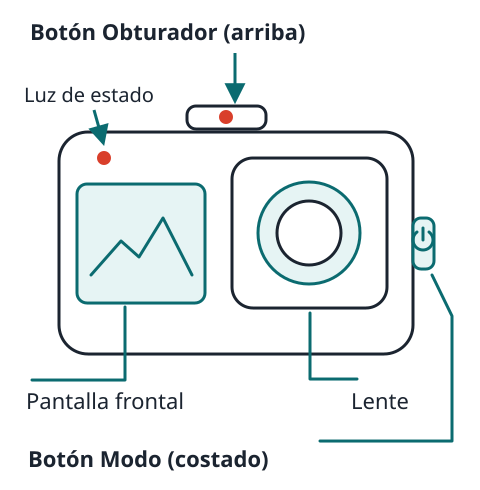
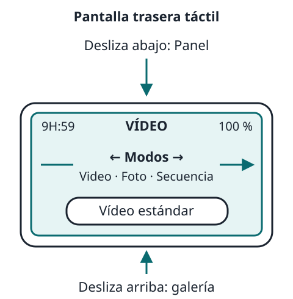
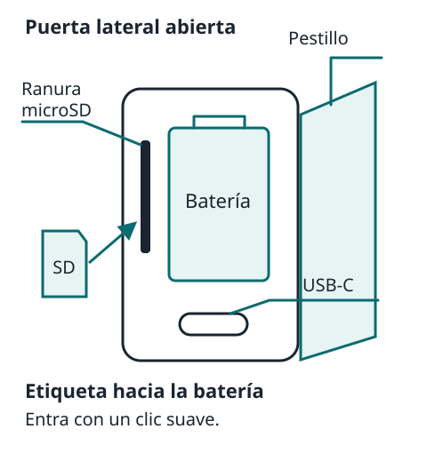
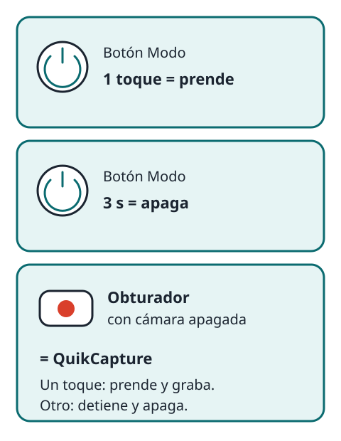
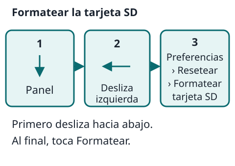
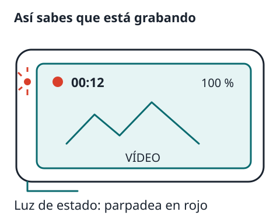
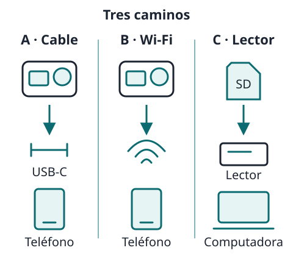
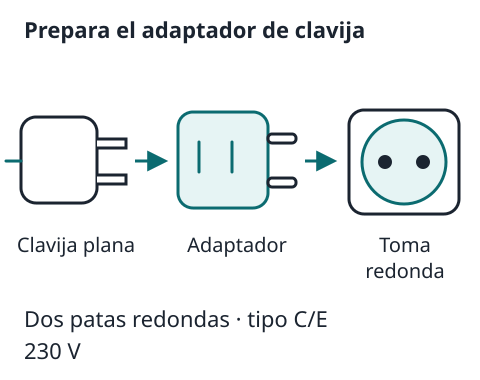
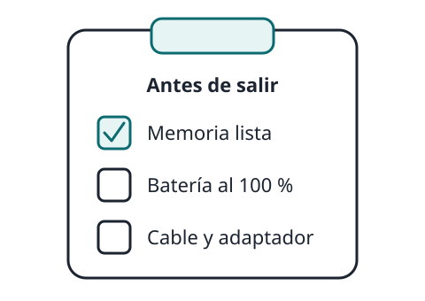

DOS BOTONES. UN PASO A LA VEZ.
Tu GoPro
en 8 pasos
Guía sencilla para aprender a usar la HERO13 Black desde cero y disfrutarla en el viaje.
Hecha para Tito. Léela con calma, un paso a la vez.

Los videos necesitan internet; el texto y los dibujos no
Guía completa para principiantes (28 min, para ver con calma en casa)
Paso 1 · Conoce tu cámara


La HERO13 Black tiene solo dos botones. Casi todo lo demás se hace tocando la pantalla de atrás, como en un teléfono.
Sus partes:
- Botón Obturador (arriba, con un punto rojo): graba video o toma la foto.
- Botón Modo (en un costado, con el símbolo de encendido): prende y apaga la cámara y cambia de modo.
- Pantalla trasera táctil: aquí se ve lo que grabas y se cambian los ajustes.
- Pantalla frontal: pequeña, muestra el estado de la cámara y te ayuda a encuadrar cuando te grabas a ti mismo.
- Puerta lateral con pestillo: adentro van la batería, la tarjeta microSD y el puerto USB-C para cargar.
- Luz de estado: parpadea en rojo mientras graba.
- Lente: cuídala; se limpia solo con un paño suave.
Recorrido de la cámara y su pantalla
Paso 2 · Prender y apagar

- Antes de la primera vez: pon la memoria (paso 3) y carga la batería (paso 7).
- Prender: presiona una vez el botón Modo.
- Apagar: mantén presionado el botón Modo 3 segundos.
- Atajo QuikCapture: con la cámara apagada, presiona el Obturador. La cámara prende y empieza a grabar de inmediato. Vuelve a presionarlo para detener; espera la cuenta de 5 segundos y se apaga sola. Ideal para no perder un momento.
- Si se congela: mantén presionado el botón Modo 10 segundos. Se reinicia sin cambiar tus ajustes.
QuikCapture en acción
Paso 3 · Poner la memoria y formatearla

Tu tarjeta de 1 TB cabe muchísimas horas de video. Antes de confiar en ella, dos cosas: revisar que sea la correcta y formatearla dentro de la cámara.
Requisitos: microSD de marca, con las letras V30 o U3 (o superior) y A2 en el rótulo. GoPro lista las recomendadas en gopro.com/microsdcards.
Pasos para ponerla:
- Cámara apagada, limpia y seca. Abre el pestillo y la puerta.
- Saca la batería.
- Mete la microSD en su ranura con la etiqueta hacia el hueco de la batería. Entra con un clic suave. Para sacarla, empújala con el dedo y sale sola.
- Vuelve a poner la batería y cierra bien la puerta hasta que el pestillo trabe.
Formatear: Prende la cámara → desliza el dedo hacia abajo en la pantalla trasera para abrir el Panel → desliza a la izquierda → toca Preferencias › Resetear › Formatear tarjeta SD → toca Formatear.
Gestión de almacenamiento y tarjeta
Paso 4 · Controles Fácil: déjalo así
La cámara trae dos formas de manejarse. Controles Fácil viene activado de fábrica y es todo lo que necesitas: cada modo ya tiene los ajustes correctos. No te pases a «Pro».
Cómo saber en cuál estás y cómo regresar: con la cámara horizontal, desliza desde el borde de arriba hacia abajo (Panel) → desliza a la izquierda → Controles. Si dice Fácil, no toques nada; si dice Pro, tócalo una vez.
Gestos de la pantalla trasera:
- Deslizar a la izquierda o derecha: cambia entre Video, Foto y Secuencia.
- Deslizar hacia abajo: abre el Panel (ajustes rápidos).
- Deslizar hacia arriba: ver lo último que grabaste.
- Tocar el botón del centro (donde dice «Vídeo estándar»): cambia entre video estándar y HDR. No es la calidad.
Calidad de video en Fácil: en la pantalla de Video toca el acceso de Calidad de video y mueve el deslizador. Opciones: «Más alto» 5.3K · «Estándar» 4K (viene de fábrica) · «Básico» 1080p.
Recomendación: deja Estándar (4K). Se ve excelente, ocupa mucho menos espacio que 5.3K y el teléfono lo reproduce mejor. Prueba un clip en tu teléfono antes de salir. Si vas a mandar mucho por WhatsApp, «Básico» también sirve y alarga la batería.
Preferencias y ajustes rápidos
Paso 5 · Grabar video y tomar foto

Video:
- Con la cámara prendida, desliza hasta que arriba diga VÍDEO.
- Presiona el Obturador una vez. Empieza a grabar: la luz roja parpadea y en la pantalla corre el contador.
- Vuelve a presionar el Obturador para detener.
Foto: desliza hasta FOTO y presiona el Obturador una vez. Cada toque es una foto (27 MP).
Temporizador: en Foto, toca el acceso del temporizador y elige 3 o 10 segundos. Acomoda la cámara y presiona el Obturador: la cuenta empieza y dispara sola. Para selfies y fotos de grupo.
Ver y borrar lo grabado: desliza hacia arriba. Deslizando a los lados recorres lo demás. El ícono de la papelera borra el archivo, y la cámara siempre pregunta antes.
Control por voz: tócalo en el Panel para activarlo. Frases que entiende en español: «GoPro, captura» inicia en el modo actual.
- «GoPro, captura»
- «GoPro, para captura»
- «GoPro, para video»
- «GoPro, toma una foto»
- «GoPro, dispara una ráfaga»
- «GoPro, inicia secuencia»
- «GoPro, para secuencia»
- «GoPro, apágate»
- «GoPro, modo video»
- «GoPro, modo foto»
- «GoPro, modo secuencia»
Idioma en Preferencias › Control por voz › Idioma.
Paso 6 · Pasar los videos al teléfono o la computadora

Tres caminos. En el viaje, el más práctico es el cable al teléfono.
A) Al teléfono con cable (recomendado): instala la app GoPro Quik (App Store / Google Play). Conecta la cámara al teléfono con cable USB-C a USB-C. Si tu iPhone tiene Lightning, necesitas el adaptador de cámara Lightning a USB de Apple más un cable USB-A a USB-C; pruébalo en casa. Abre Quik y sigue las instrucciones: descargas lo que quieras al teléfono y de ahí lo mandas por WhatsApp.
B) Al teléfono sin cable: Panel → deslizar a la izquierda → Emparejar dispositivos; en el teléfono, con Wi-Fi y Bluetooth prendidos, abre Quik y sigue los pasos. Luego en Quik toca Descargar. Más lento que el cable y gasta batería.
C) A la computadora con lector de tarjeta: saca la microSD, ponla en un lector o adaptador, conéctalo a la computadora y copia tus fotos y videos a la computadora. Abre una copia para confirmar que se ve bien antes de borrar nada de la tarjeta. Suele ser lo más rápido para vaciar la tarjeta completa.
La app GoPro Quik paso a paso
Paso 7 · Batería, carga y enchufes de Europa

- Cargar: abre la puerta, conecta el cable USB-C a un cargador USB (como el del teléfono) o a la computadora. Tarda unas 3 horas. Cuando las luces se apagan, ya está.
- Ver el nivel: en la pantalla trasera aparece el porcentaje. Detalle en Preferencias › Acerca de › Información de la batería.
- Enchufes en Europa: son redondos de dos patas (tipo C/E) y 230 V. Casi todos los cargadores USB de teléfono aceptan de 100 a 240 V: revisa que el tuyo lo diga en la letra pequeña. Si lo dice, solo necesitas un adaptador de clavija. Compra uno antes de salir (con dos entradas mejor).
- Batería extra: una segunda batería GoPro Enduro (la de la HERO13 Black) te da margen en días largos. GoPro recomienda usar solo sus baterías.
- Alargar la batería: graba en Estándar o Básico, apaga la pantalla frontal (desde el Panel), usa QuikCapture, y apaga el GPS (Preferencias › General › GPS) y las conexiones (Preferencias › Conexiones inalámbricas › Conexiones) cuando no las uses. Vuelve a prender las conexiones para usar Quik.
- Puedes grabar mientras está conectada a un cargador USB (no a la computadora), pero no se carga hasta que dejes de grabar.
Paso 8 · Antes de salir y trucos del viaje

Checklist
Marca lo que ya tienes listo.
Trucos:
- Un toque y ya: con la cámara apagada, un toque al Obturador graba (QuikCapture). Otro toque, detiene y apaga.
- Graba cortito: clips de 30 segundos a 2 minutos se mandan fácil y se ven más. Un video de 20 minutos es difícil de mandar y de ver.
- Sostén con las dos manos o usa un palo/agarre. HyperSmooth estabiliza, pero ayuda que tú no la muevas de golpe.
- Sin sol directo a la lente y con la lente limpia: muchas fotos borrosas son una huella en el vidrio.
- Habla con ella cuando tengas las manos ocupadas: «GoPro, captura».
- Cada noche: pasa lo del día al teléfono o a la computadora (Paso 6) y carga la batería. Así empiezas cada día con espacio y pila.
- Bajo la lluvia sin miedo: es sumergible hasta 10 m con la puerta bien trabada y el sello limpio. Si se moja con agua salada, enjuágala con agua dulce y sécala antes de abrirla.